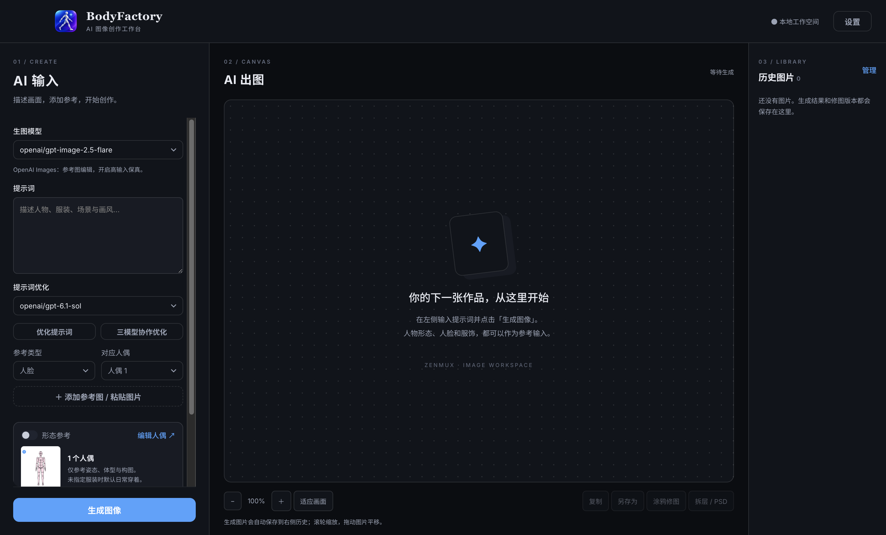

摆好姿态，再开始。
1–5 个人偶，分别调整性别、体型、姿态与构图。形态参考只是输入的一部分，想纯文字创作也可以。
A WORKSPACE FOR YOUR IMAGINATION
从一个姿态，到一张作品。
让提示词、人物与参考图，在同一张工作台上相遇。
macOS · Windows · Linux / 开源桌面应用
ONE CANVAS. YOUR ENTIRE PROCESS.
输入、出图、历史。每一步都看得见。

FROM A SMALL IDEA TO THE FINAL FILE
1–5 个人偶，分别调整性别、体型、姿态与构图。形态参考只是输入的一部分，想纯文字创作也可以。
上传或粘贴人脸与服饰参考。选择 ZenMux 模型生成图片，让文字 AI 流式优化提示词、讨论拆层方案。
涂鸦标注后送给 AI 修图，缩放、平移、复制、另存。历史批量管理；通过拆层模型生成透明图层，再导出 PSD。
YOUR DESKTOP. YOUR WORKSPACE.
API Key 通过操作系统加密保存在本机，图片历史保存在本地。亮色与暗色主题，适应你的创作习惯。
AI 请求会将提示词和所选参考图发送至 ZenMux。模型能力、参考图保真度与拆层效果取决于所选服务；PSD 中的文字层为图像图层。
获取 ZenMux API Key ↗READY WHEN YOU ARE
选择你的平台。v1.0.0
Windows 安装包未进行代码签名。下载与构建状态以 GitHub Release 为准。